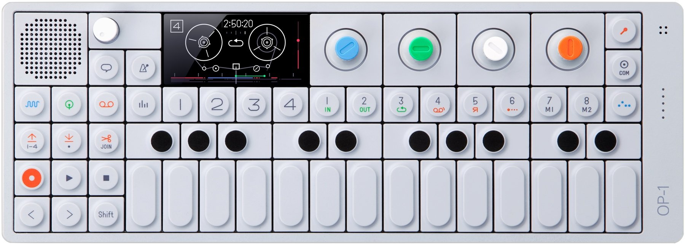

Endless enjoyment out of this machine
-Elijah Wood
OP-1 Synthesizer
Overview
The award-winning OP-1 from Teenage Engineering is a synth like no other. With its futuristic design, the OP-1 takes on the role of synthesizer, sampler, and controller all-in-one highly stylized package. This synth is something to behold, but it sounds even better than it looks, with exciting features like the FM Radio and an assignable G-Force sensor for motion controlled effects. OP-1 also incorporates a built-in Tape feature that gives you the ability to record everything you do on up to four tracks, with overdubbing and reverse recording functions.
Compact synthesizer, sampler, and controller in one
From the classic 8-bit Dr Wave sound engine to the String physical modeling engine, the Teenage Engineering OP-1 gives you ten great ways to make cool and creative sounds. You also get two different styles of onboard samplers, including a synth sampler and a drum sampler for adding realistic instrument sounds to the mix. And when you hook the OP-1 up to your computer, you can instantly take control of your favorite virtual instruments, right from its extremely streamlined user interface.
Record like a pro with the built-in 4-track virtual tape deck
When you're ready to record, you'll find the Teenage Engineering OP-1's built-in 4-track "tape deck" to be more than inspiring. Combined with the onboard sequencer, you can create truly funky effects by varying the tape speed (or even reversing it) it real time. And when you add in the OP-1's 4-channel mixer with EQ and Drive controls, you'll be surprised by what you can accomplish.
Features
Drag and Drop
When plugged to a Mac/PC using USB, the OP-1 shows up as a mass storage device. Ready for you to drag and drop audio files between your computer and the OP-1. The 4 tape tracks are available as well as sampled waveforms for you to manipulate. No additional software or drivers required. Just plug and play.
Color-coded Interface
The unique OP-1 color-coded interface with color graphics on the beautiful OLED display is direct related to the four-color rotary encoders and the legend on the keyboard. This makes for extremely easy reading and a non-technical way to control and shape your sounds. Finally, you don't have to be a scientist to use a synthesizer.
16 Hour Battery
Playing at maximum volume you can travel over the Atlantic Ocean twice, constantly making music on your OP-1 before it runs out of power. And at the same time have over 2 years of stand by time.
Specifications
Sound Engines
- Dr Wave - Raw 8-bit yupe sound engine
- FM - Easy to tweak FM synthesis engine
- Pulse - Square wave type engine
- String - Physical modeling with a twist
- Digital - Raw digital type of engine
- Phase - Phase distortion engine
- Cluster - Multiple Wave Cluster
Sample Engines
- Dedicated instant Synth Sampler with 6 seconds sampling time for each slot
- Dedicated instant Drum Sampler with 12 seconds sampling time for each slot
- With automated layout feature
- Instant sampling with built-in Microphone or Line in
Envelopes
- Classic ADSR type of envelope
- Dynamic Envelope for Drum sounds
Effects
- Delay - Classic delay type
- Phone - Hacked phone effect
- Punch - Adds punch to your sound
- Grid - Grid based echo
- Spring - Spring reverb type
Tape Feature
- 4 individual tracks with instant Solo
- Instant variable Tape Speed
- 6 minutes recording time in Normal tape speed
- Up to 24 minutes recording time in Low tape speed
- Loop function with movable region
- Tape tricks for Break Tape, Bits and Reverse
- Reverse Recording
- Classic Tape editing Features Lift / Split and Drop
- Lift tape recordings back into Sampler for endless sound design
Motion Sensor
- 3 Axis Motion sensor (G-Force)
- Assignable to any synth, envelope, effect parameter or to pitch
Built-in FM radio
- Sample direct from any radiostation
- Record direct to tape
CPU
- 400 MHz Processor Core
- (800 MMACSS performance)
- 64 MB Low-Power SDRAM (12ns)
- 512 MB Nand Flash storage
- 24-bit 96kHz ADC/DAC
Battery
- Li-Ion 1800 mAh
- 16 hours active Battery Life
- Charge via USB port
I/O
- USB 2.0 high speed (OTG)
- 3.5 mm Line Input, Output
- Built-in microphone
- High output mini speaker 8 Ohm 1 Watt
Display
- Amoled display running in 60 fps
- 320 x 160 pixel resolution
- Color Depth: 16.7 M
- Contrast: 10000:1 (good for outdoor use!)
- Viewing Angle: 170
Mechanical
- Low profile keyboard module
- Scissor-switch ultra low profile design
Encoders
- Industrial Grade Incremental Encoders
- Excellent indexing feel (remains consistent over life)
- Zinc diecast and fiber enforced high performance plastic
Body
- Advanced CNC:d one-piece Aluminum design.
- 2 X M6 Mounting holes for accessories.
- 2 X Cuts for strap accessory.
- Color
- Light grey powder coated body and EDM textured keyboard
Dimensions
- L 282 mm, H 102 mm, D 13.5 mm